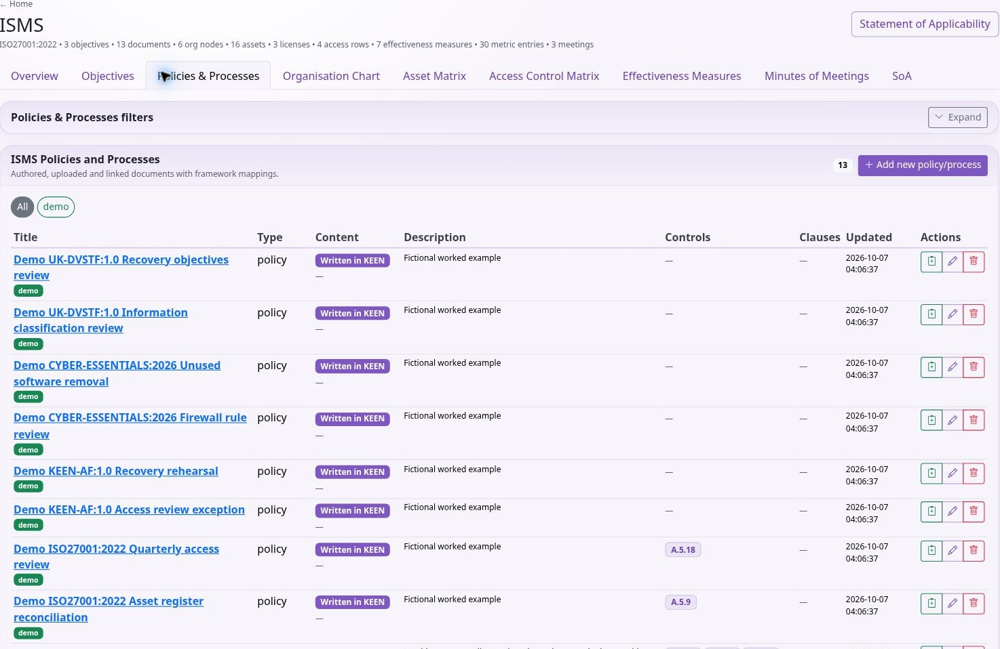

Using KEEN
Policies, processes and documents
Chapter 9 of 15
Policies, processes and documents
Organise documents and preserve their history

- Open ISMS → Policies & Processes for the write/upload/link form. The separate Documents workspace provides folder browsing, the native text editor, revision history and comments. Create a folder under the intended parent. Use a clear structure such as Governance, People, Operations and Reviews, and use control links to connect material across that structure.
- Create a document with title, type, folder and tags. Use a concise summary/description to explain its purpose. Link the relevant controls and clauses where the editor provides these fields.
- Choose the content mode: Write in KEEN for rich text, Upload a file for an existing document, or Link to a URL for an external source. Verify that intended readers can access any linked source.
- Save, reopen and review the actual content. For rich text, use headings and lists to make responsibilities and procedures easy to find. For uploaded material, verify the correct file was attached.
- For text written in KEEN, saving changed content creates a numbered revision. Inspect Revision history in Documents to preview previous content and its checksum. File uploads and external URLs do not use this native-text revision history. Use Comments for discussion without treating a comment as an approved content revision.
- Use folders, types and coloured tags to find the current material. Preserve the document’s relationships when reorganising it, and check links after moving it.
Editing a URL record does not preserve every historical version of the external page. Use an appropriate captured artefact when a fixed version must be demonstrated. Record staff policy acknowledgement in People assurance records and link the supporting evidence. On concurrent-edit conflicts, reload the newest version and reconcile intentionally.
Write, upload and link policies and procedures
KEEN stores a document record separately from the content it refers to. The record supplies the title, type, description, folder, tags and relationships to controls and clauses. This lets a policy participate in the management system whether you maintain its text inside KEEN, upload a file, or keep it in another document system.
Write a policy directly in KEEN
- Open ISMS → Policies & Processes and create a document. Enter a meaningful title, select its type, and describe its purpose. Select the folder and tags used by your organisation.
- Select Write in KEEN. Use the rich-text editor for headings, paragraphs, lists and other supported formatting. For a policy, a useful structure is purpose, scope, responsibilities, requirements and review arrangements.
- Select the relevant clauses and controls, then save. Open the document detail to check the rendered text and the saved relationships.
- Use the Documents workspace for continued writing. Select a folder or search by title, tags or description, then select the document. Edit its text and save.
- Open a version in Revision history to view the saved content and SHA-256 checksum. A changed text body creates a new content version; the history records saved content. Manage formal approval through your organisation’s review process.
- Use Comments for discussion about the document. Record formal approval and review responsibilities according to your organisation’s process. Capture approval explicitly according to that process.
If another editor saved since you opened the text, KEEN rejects the stale save with a conflict. Copy your unsaved text somewhere safe, reload the current document and reconcile the changes. Selecting an old version opens a preview and keeps the current document unchanged.
Upload an existing document
In the ISMS document form, select Upload a file, choose the file and save. The API accepts non-empty files up to 100 MiB; a reverse proxy may impose a smaller limit. Open the saved detail page and check the filename, uploader, upload time and downloadable file. KEEN records the stored file’s size and checksum.
Uploading a replacement changes the current file associated with that document record. The Documents revision picker covers native text. Retain uploaded-file versions separately when historical review is required. Keep an explicitly versioned record or an appropriate captured audit artefact when you need to prove exactly which uploaded version was reviewed.
Link a document maintained elsewhere
Select Link to a URL and enter the document’s address. Add its title, description and control/clause links as you would for a native policy. Check the URL with an account representative of its intended readers. Readers also need permission in the external document system.
A URL is a reference to a changing external resource. Linked pages remain in their source system; capture the relevant version when you need a historical record. BookStack collection and section snapshots are separate features for bringing captured BookStack content into the evidence workflow. For an audit, select the relevant captured material when historical content matters.
The ISMS content selector controls what you edit. Check the saved detail when switching between native text, upload and link: the record can retain file metadata from an earlier upload. Use folders and coloured tags for discovery, and application permissions for access control.
When the BookStack ingester is enabled, open ISMS → Policies & Processes → BookStack pages & sections to select a page or section, associate it with an ISMS document and a framework control or clause, and retain a snapshot for audit evidence. Document management permissions govern capture; readers can review retained snapshots.